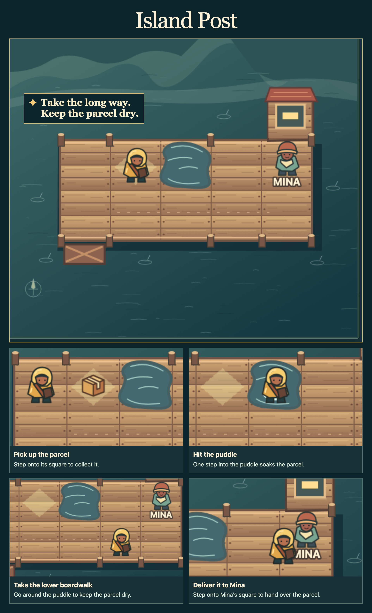
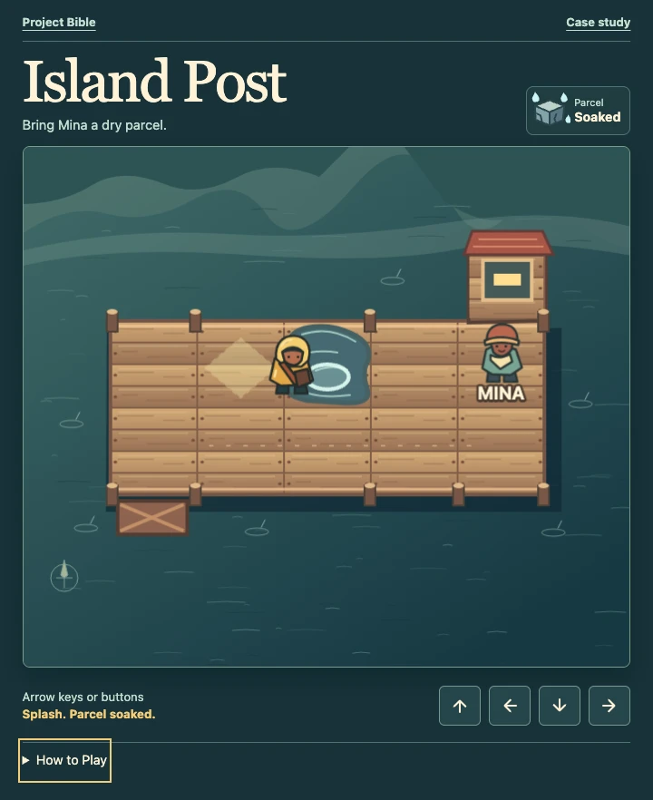
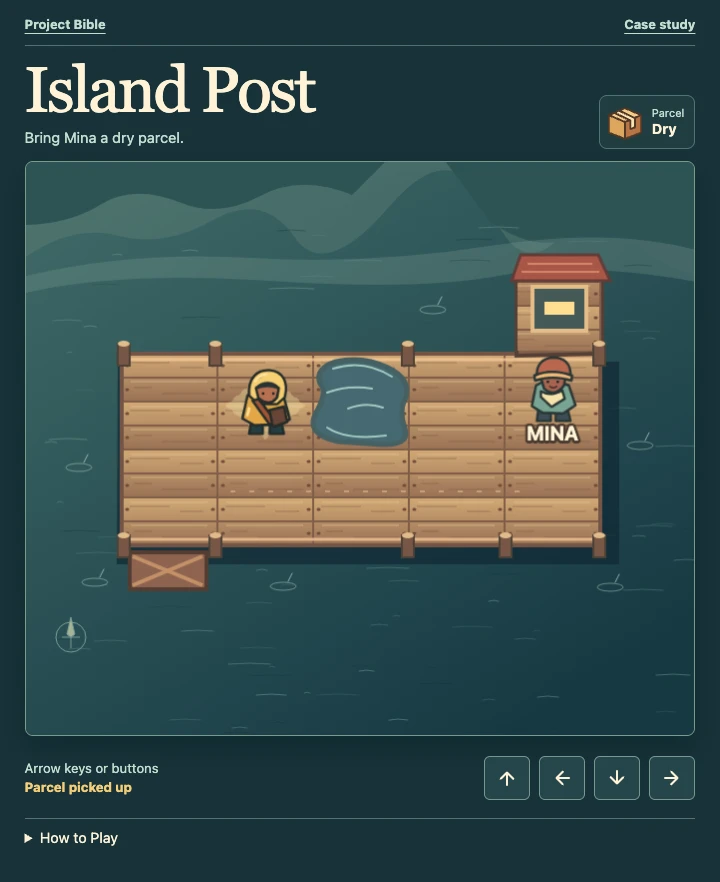
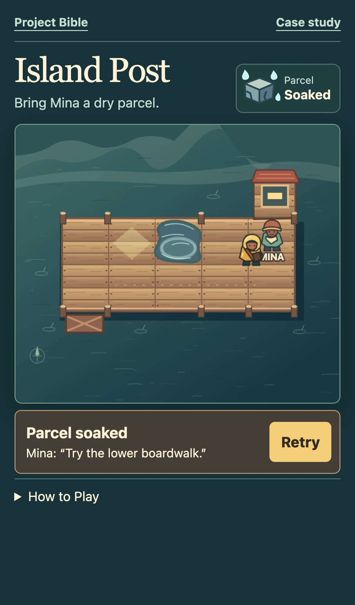
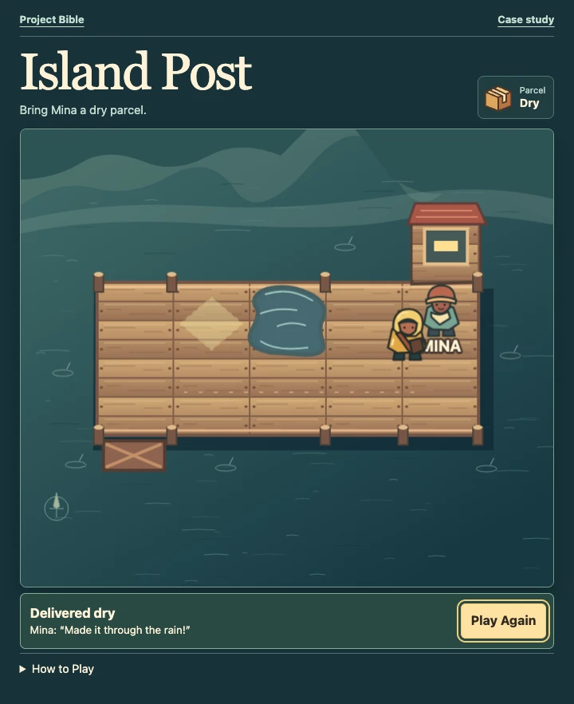

Chapter concept board template
Deliver a parcel at the Dock
The existing Island Post screenshots illustrate the board layout. Replace them with the concept or reference images for the chapter you are preparing.


Show the chapter’s main result in context.


Show where the person starts.


Show a meaningful action or choice.


Show a different target or state.


Show what completion looks like.